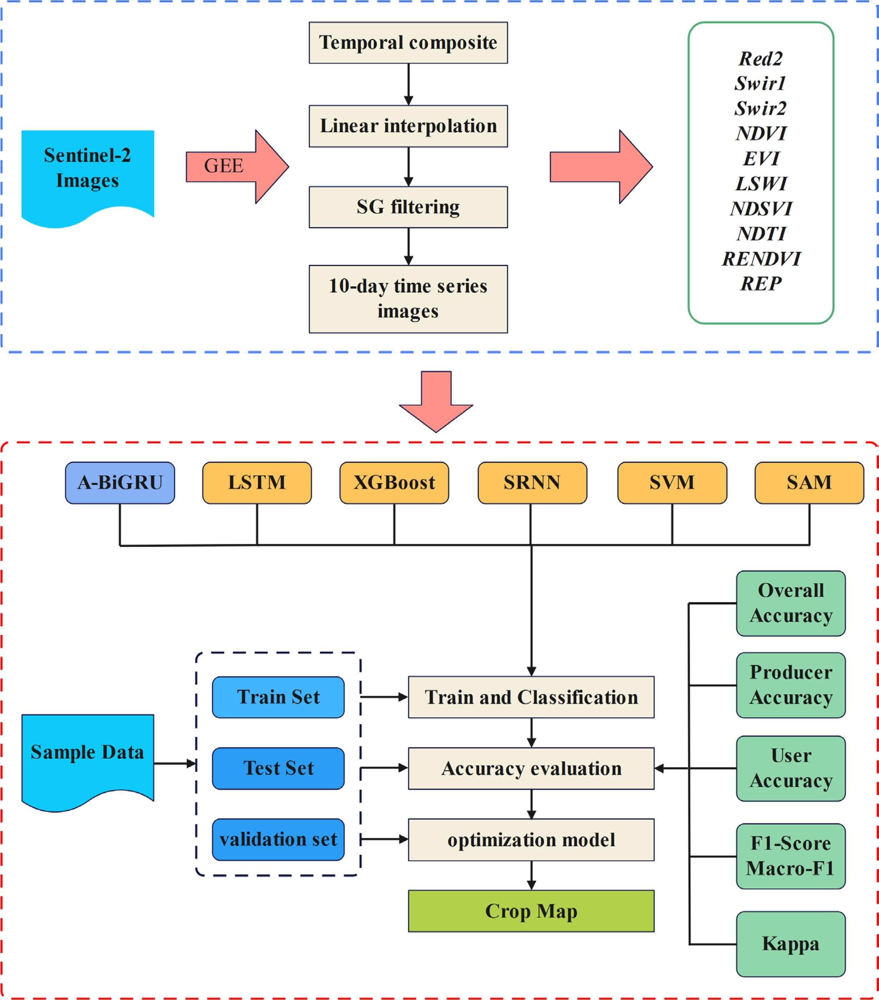

7 Week 7
Classification I
7.1 Summary
Classification refers to the process of categorizing pixels in satellite imagery into distinct classes or categories based on their spectral signatures, textural features, or other characteristics detectable from the imagery. This is in line with Tobler’s first law of geography, i.e. closer things are more related.
7.1.1 How does it work?
Expert Systems - a system that uses human knowledge to solve problems that require human intelligence, e.g. training datasets.
Machine Learning
Is linear regression machine learning? Yes, it can be considered so. Types of ML:
- classification trees - classify data into two or more discrete categories, e.g. should I play golf today? - regression trees - predict continuous dependent variable, e.g. GCSE score
Overfitting - too perfect model, 100% accuracy, most likely useless, e.g leaf with just one person or pixel value
Underfitting - potentially can happen when forcing a linear relationship in regression when out data in not linear.
- random forests - produce bootstrap samples; many decision trees with less control (from a random numver of variables)
- image classification:
Unsupervised (pixels are grouped into “clusters” based on their properties, and each “cluster” is classified with a land cover class)
Supervised (representative samples are chosen for each land cover class, and based on the training set results, this is replicated for the entire image)
OBIA - object based image analysis (especially useful for high-resolution data because it uses both spectral and contextual information; pixels are grouped into representative vector shapes with size and geometry)
Interestingly, higher resolution images do not guarantee better land cover. The image classification techniques used are a very important factor for better accuracy.
7.2 Applications
The goal of classification in environmental and Earth sciences is often to monitor changes over time, assess ecosystem health, plan conservation efforts, or understand human impact on natural landscapes, among other applications. In recent years, the use of deep learning in remote sensing image classification is becoming more and more popular, especially thanks to its powerful feature extraction capabilities and robustness (Dou et al. 2021).
Feng et al. (2023) study aims to develop a deep learning framework to improve the accuracy of crop type identification using Sentinel 2 data. Researchers built a time-series image classification framework using Attention-based Bidirectional Gated Recurrent Unit (A-BiGRU) to map rice, maize, and soybean in Fujin region of China, from reconstructed Sentinel-2 time-series images. Figure 1 demonstrates methodolgy used in this study. Interestingly, despite its the inherent disadvantage of CNNs is the need for a large number of spatially labeled samples as it has been observed by Gallo et al. (2023). Nevertheless, different studies which focused on using a different algorithm, e.g. Wei et al. (2023) who used RF algorithm also on Sentinel 2 data, was able to achieve a significantly higher accuracy. Their study was based on random forest importance and normalization, which concluded in a strong performance for early crop mapping.

7.3 Reflections
Case of Brazil forest monitoring was among the most thought provoking this week for me. Fact that the area of a forest the size of Nepal can be monitored by two employees with two vehicles, a boat and a drone and provide a sufficient image within 20 minutes is just incredible, how efficient this is! At the same time, it is also a bit scary to think about its monitoring capabilities… is there a line between control, justice and big brother entering into our lives? Nevertheless, it is incredible how all of the image classification efforts (as in example from China) may result in tools able to predict crop yield and monitor its growth, indirectly ensuring food security. I found it interesting to find out about machine learning real use-cases. I’m quite amazed with its vast options and and seemingly endless opportunities for accuracy improvements.